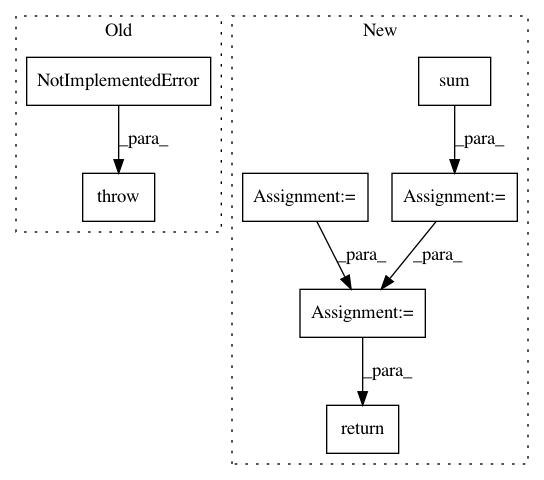

4bca716c8413a8eabdce56ad8468db3f1f145b51,gpytorch/lazy/lazy_tensor.py,LazyTensor,_quad_form_derivative,#LazyTensor#Any#Any#,94
Before Change
:obj:`torch.tensor`: derivative with respect to the arguments that are actually used to represent this
this LazyTensor.
raise NotImplementedError(
"The class {} requires a _quad_form_derivative function!".format(self.__class__.__name__)
)
def _size(self):
Returns the size of the resulting Tensor that the lazy tensor represents.
After Change
:obj:`torch.tensor`: derivative with respect to the arguments that are actually used to represent this
this LazyTensor.
args = self.representation()
for arg in args:
arg.requires_grad = True
loss = (left_vecs * self._matmul(right_vecs)).sum()
grads = torch.autograd.grad(loss, args)
for arg in args:
arg.requires_grad = False
return grads
def _size(self):
Returns the size of the resulting Tensor that the lazy tensor represents.
In pattern: SUPERPATTERN
Frequency: 3
Non-data size: 7
Instances
Project Name: cornellius-gp/gpytorch
Commit Name: 4bca716c8413a8eabdce56ad8468db3f1f145b51
Time: 2018-10-30
Author: gardner.jake@gmail.com
File Name: gpytorch/lazy/lazy_tensor.py
Class Name: LazyTensor
Method Name: _quad_form_derivative
Project Name: dmlc/dgl
Commit Name: 650f6ee1e0b3c2888a2c6d7db9c3d159cae5a583
Time: 2019-08-27
Author: expye@outlook.com
File Name: examples/pytorch/gin/gin.py
Class Name: GINLayer
Method Name: forward
Project Name: slinderman/pyhawkes
Commit Name: 922b4506360a62e4b7ef858fdd61c5765d53f0d1
Time: 2015-01-24
Author: scott.linderman@gmail.com
File Name: pyhawkes/internals/network.py
Class Name: _StochasticBlockModelBase
Method Name: log_likelihood